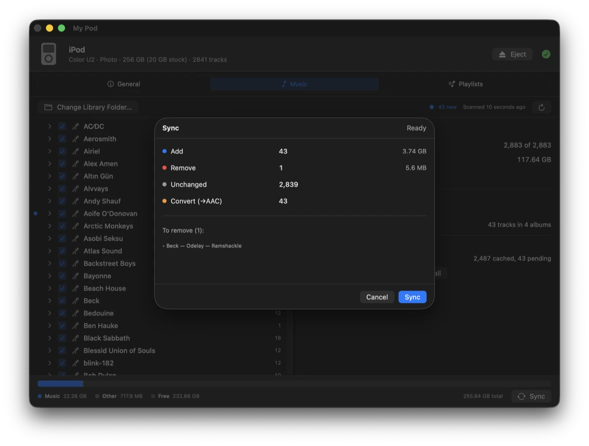
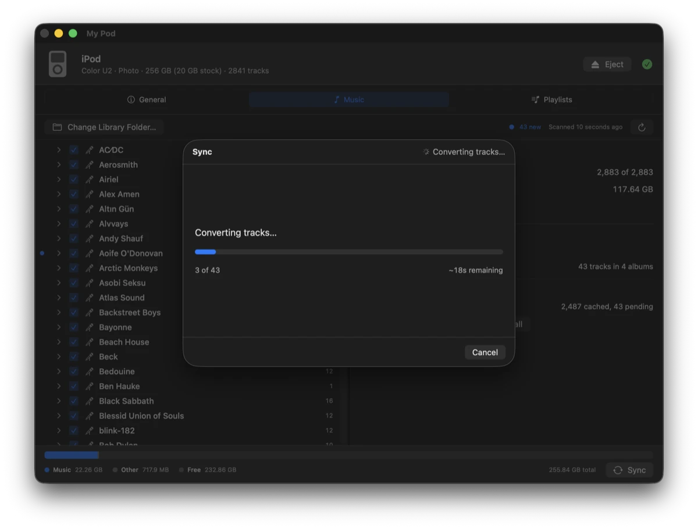
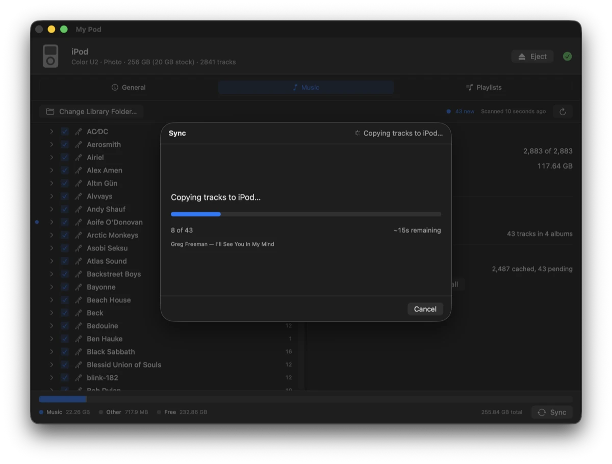
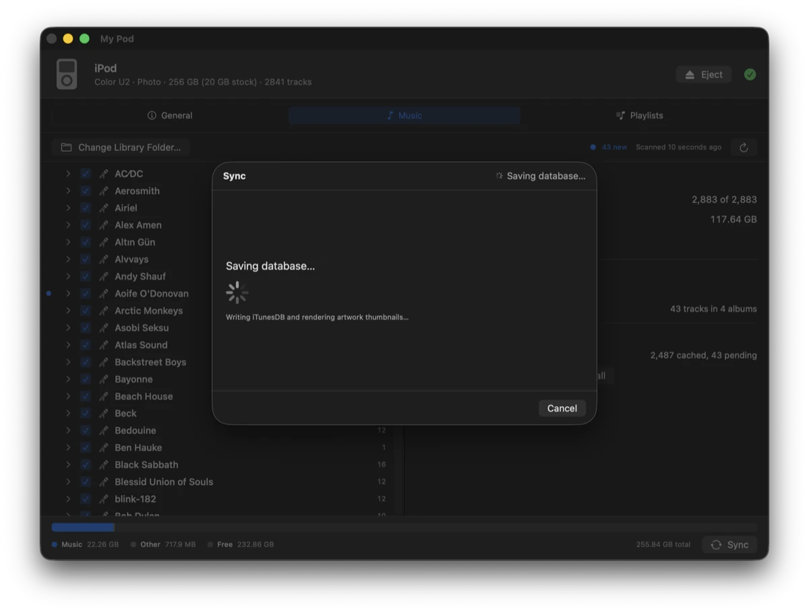
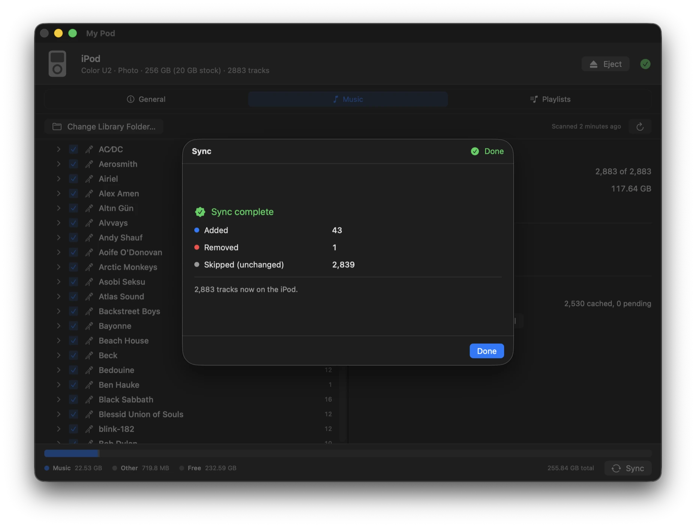
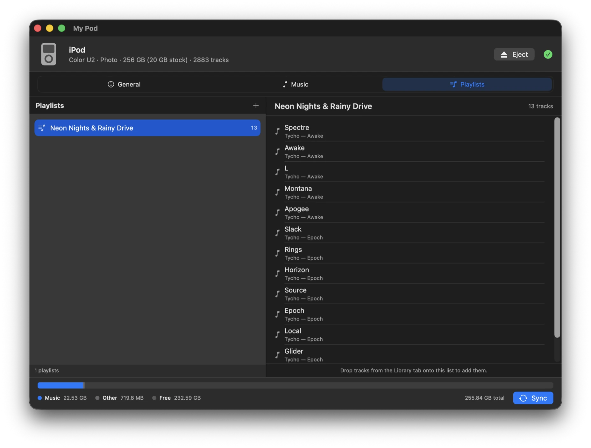
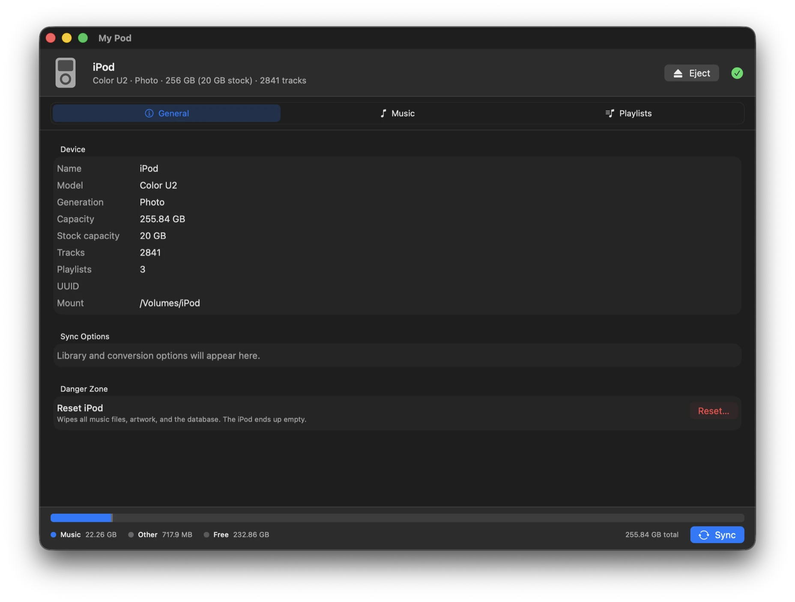

What it does
Everything iTunes used to, minus iTunes
Apple dropped iPod support from macOS years ago. My Pod puts a native SwiftUI interface on top of libgpod, so a click-wheel iPod can still be kept in step with a music library on disk.
-
It notices the iPod
Plug it in and the device is picked up the moment it mounts. No pairing, no setup step.
-
Your folders, mirrored
Point it at an
Artist/Album/Tracklibrary and sync all of it, or tick exactly what you want. Syncing is a two-way mirror: checked music is added, unchecked music is removed. -
New music surfaces itself
Anything not yet on the iPod gets a marker, rolled up onto album and artist rows. Click any of them and the panel alongside reports cover art, formats, sizes and what’s already on the device.
-
Conversion you don’t manage
FLAC, OGG, Opus, WMA and APE are converted to something the iPod plays — the originals stay untouched. 256 kbps AAC by default, or Apple Lossless if you’d rather keep lossless music lossless. Conversions are cached, so a file is only ever encoded once.
-
A setting per iPod
Each iPod remembers its own quality and its own ticked music, so a modded classic can hold a lossless library while a nano gets as much AAC as fits. Plug one in and it switches — the other is left exactly as it was.
-
Cover art that shows up
Artwork is found per album and written into the iPod’s database as properly rendered thumbnails. Albums missing one are flagged, and you can search for a cover, drop your own in, or pull the picture back out of the audio files. It’s squared and saved as
cover.jpgnext to the music. -
Offline unless you ask
Two features use the network — the artwork search and Check for Updates — and only when you press the button. Nothing at launch, on a timer, while scanning, or during a sync. No analytics, no telemetry, no automatic update check.
-
Playlists as plain files
Ordinary
.m3ufiles you can edit anywhere. Check a playlist and the tracks it points at come with it.
A sync, start to finish
Nothing is written until you say so
Every sync opens with a plan of exactly what will change. Each phase after that reports its own progress and can be cancelled — cancelling finishes the track in flight and saves what’s already done, so the iPod is never left half-written.
-
01
Review
What gets added, removed, left alone, and transcoded.

-
02
Convert
Only what isn’t already cached, with a running estimate.

-
03
Copy
Track by track onto the device, naming each as it goes.

-
04
Save
Writing the iTunesDB and rendering artwork thumbnails.


Playlists
Ordinary files, not a database
Playlists are plain .m3u files in a folder you control, so
anything can read them and they outlive the app. Build them in Finder, a text
editor, or any app that writes .m3u. Check one in My Pod and it
syncs as a real iPod playlist — along with the tracks it references, so
you never have to go and tick those separately.

The device
What’s actually plugged in
Model, generation, capacity, and where it’s mounted. On an iPod whose original drive has been swapped for a CF card or SSD, the installed capacity and the model’s stock size are both shown, because they disagree.

Getting it running
Download it, or build it yourself
The download is self-contained — everything it needs is inside the bundle, so Homebrew isn’t required to run it. Building from source needs Homebrew for glib, but still fetches nothing else: libgpod is vendored in the repository and compiled locally.
Download
Unzip it, drag My Pod.app to Applications, then clear the quarantine flag once. The build is signed ad-hoc rather than with an Apple Developer ID, so without this macOS refuses to open it and claims it’s damaged — it isn’t.
xattr -dr com.apple.quarantine \
"/Applications/My Pod.app"Or open it the first time through System Settings → Privacy & Security → Open Anyway. Building from source avoids the whole business. Every version lives on the releases page.
Build from source
- macOS14 or later
- Xcode26 or later
- Homebrewfor glib and pkg-config
# dependencies
brew install glib pkg-config
# first build only — generates libgpod's
# configure script
brew install autoconf automake libtool \
gtk-doc intltool
# build and launch
git clone https://github.com/studio-rischio/My-Pod.git
cd My-Pod
./build.shIf the iPod doesn’t show up, put it in disk mode
My Pod finds the iPod the moment macOS mounts it as a disk, so a click-wheel iPod has to be in disk mode to be seen at all. That used to be the Enable disk use checkbox in iTunes — and since modern macOS dropped iPod support, forcing disk mode by hand is what replaces it.
- If the iPod has a Hold switch, slide it on, then back off.
- Hold Menu and the centre button together until the Apple logo appears — roughly 6 to 10 seconds.
- The moment the logo shows, hold the centre button and Play/Pause until the screen reads Disk Mode or OK to disconnect.
It stays in disk mode until it’s reset again, so you can sync as normal from there. Eject it in My Pod before unplugging, then hold Menu and the centre button once more to boot it back to the music menu. Plenty of iPods mount on their own, having had disk use switched on by whatever last synced them — if yours already appears, skip all of this.